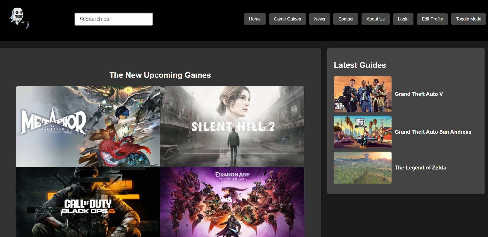

Currently a Web Developer at Trusty Pay & Freelance IT Business Analyst.I bridge the gap between code and strategy—building robust web solutions while using AI-accelerated workflows to translate complex business needs into airtight BRDs and process models.
Bridging the gap between complex business objectives and scalable technical solutions through precise analysis and structural documentation.
Coming from a background in both web development and systems analysis, I view projects from both sides of the aisle. I understand the operational goals businesses need to scale, and I know the structural constraints developers face. My focus is on closing that gap—translating high-level business objectives into precise, actionable technical architectures that engineering teams can actually build.
"A successful system is driven by business strategy, but it runs on technical clarity."
Combining traditional business analysis discipline with hands-on development experience and deliberate AI prompt strategies to build smarter, requirement-aligned software solutions.
Exploring the systems I evaluate, the problem-solving frameworks I leverage, and the core industries I operate within.
Analysed: Digital wallet payment processing, real-time inventory locking to prevent overselling, order lifecycle status tracking, and operational gap analysis transitioning from manual dispatch (As-Is) to automated merchant push notifications (To-Be).
Analysed: Digital wallet transactions, microfinance contract lifecycles, and loan business workflows. Drafted Standard Operating Procedures (SOPs) to ensure regulatory compliance and operational efficiency.
Analysed: Fleet dispatch scheduling, daily revenue reconciliation, and vehicle maintenance budgets. Mapped real-world transit operations into optimized scheduling and resource allocation workflows.
Analysed: End-user reported defects, ticketing escalation workflows, and system troubleshooting processes. Acted as the technical bridge to resolve operational blockers and streamline IT support.
Personal coding projects and technical experiments from a developer background.
A comprehensive web platform designed to aggregate and display detailed game information, character stats, and player guides. Built to provide gamers with an intuitive, searchable database of gaming knowledge.

Professional certifications and achievements.
Have a project in mind or just want to say hello? Reach out through any of these channels.
I'm open to Business Analyst roles and freelance documentation / process-mapping work.
Download CV